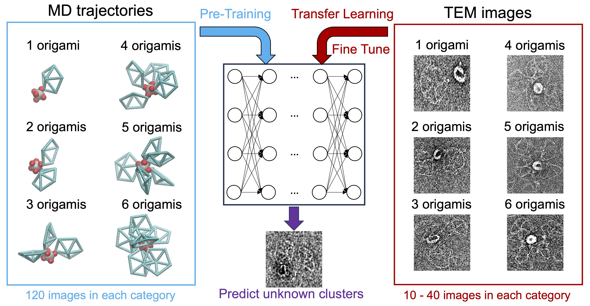
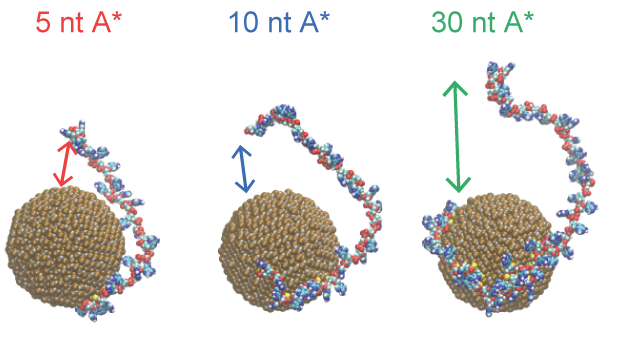
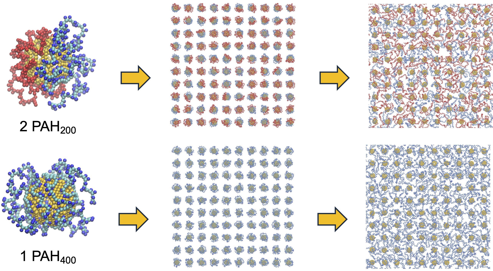
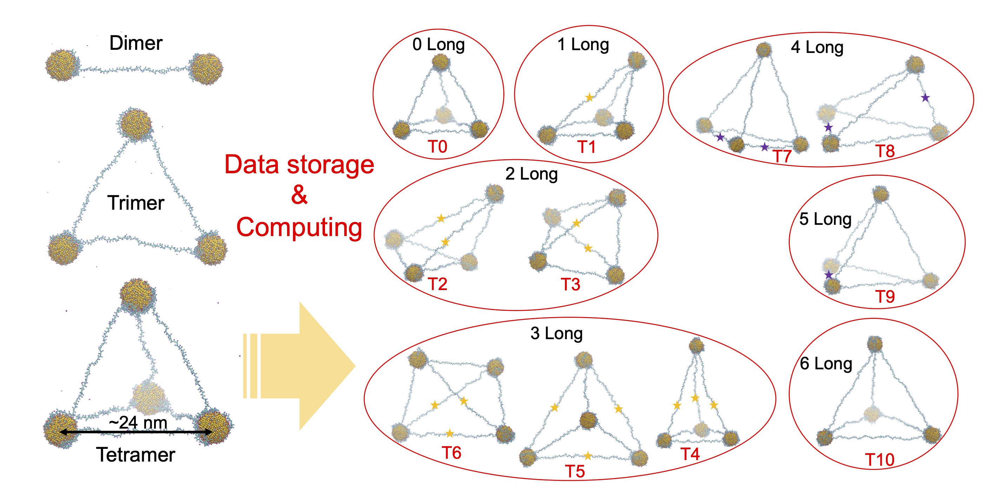
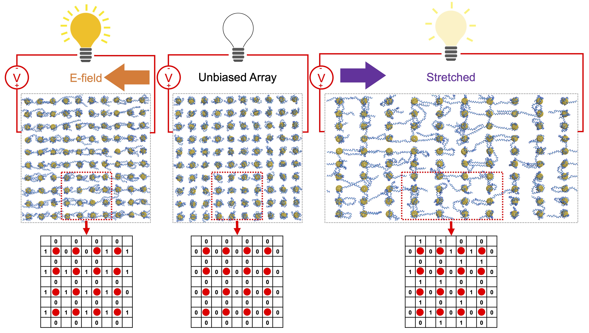
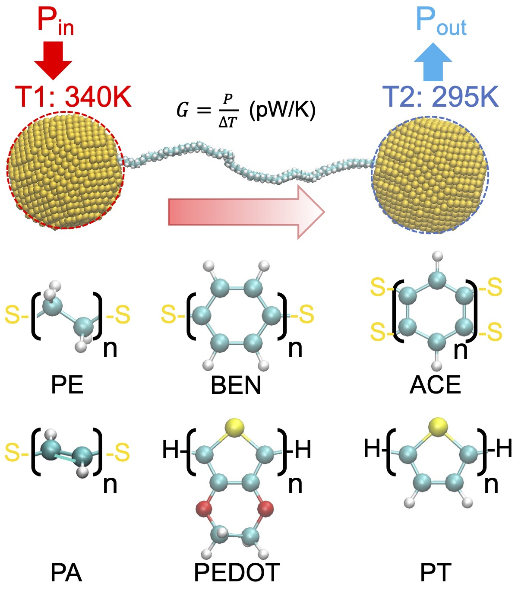
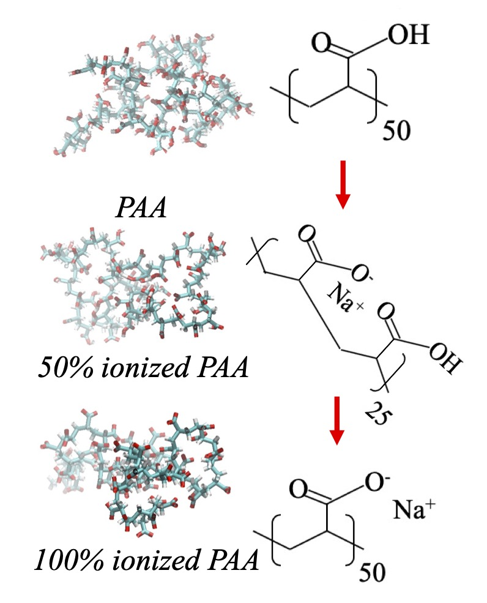
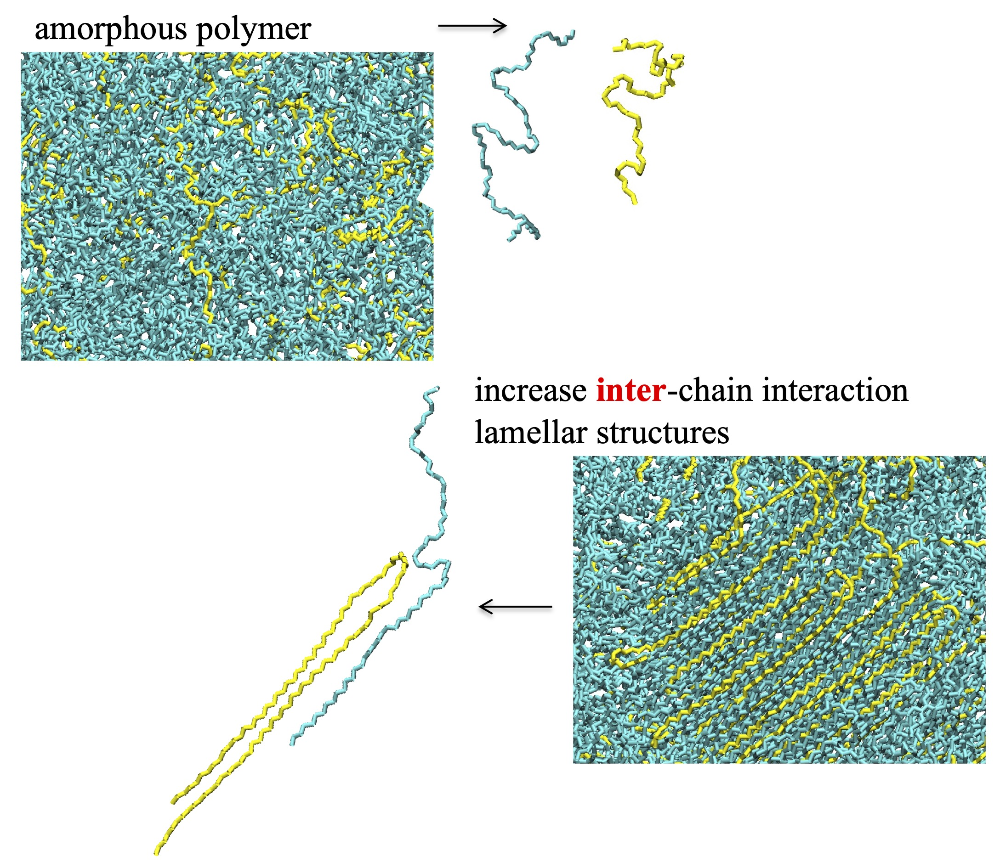

Research Publications
Nanoparticles and Biological Systems
- "Characterizing DNA Origami Nanostructures in TEM Images Using Convolutional Neural Networks." Xingfei Wei, Qiankun Mo, Chi Chen, Mark Bathe, and Rigoberto Hernandez J. Chem. Inf. Model. (2025).

- "Gold Nanoparticle Ligand Structure Investigated with Solution NMR: Effects of Ligand Length on Headgroup Dynamics and Ion Penetration." Katherine M. Hatzis, Xingfei Wei, Maegen Kincanon, Anita Wo, Jason Gandrapu, Offer Zeiri, Rigoberto Hernandez, and Catherine J. Murphy ACS Chem. Mater. (2025).
- "In vivo Transformations of Positively Charged Nanoparticles Alter the Formation and Function of RuBisCO Photosynthetic Protein Corona." Christopher Castillo, Su-Ji Jeon, Khoi Nguyen L. Hoang, Claire Alford, Erica Svendahl, Chaoyi Deng, Yi Wang, Yinhan Wang, Xingfei Wei, Rigoberto Hernandez, Jason C. White, Korin E. Wheeler, Catherine J. Murphy, Juan Pablo Giraldo Nat. Nanotechnol. (2025).
- "Structure and Zeta Potential of Gold Nanoparticles with Coronas of Varying Size and Composition." Xingfei Wei, Arham R. Alam, Qiankun Mo, and Rigoberto Hernandez ACS J. Phys. Chem. C 129, 4204-4214 (2025).

- "Binding Site Programmable Self-Assembly of 3D Hierarchical DNA Origami Nanostructures." Xingfei Wei, Chi Chen, Alexander Popov, Mark Bathe, and Rigoberto Hernandez The Journal of Physical Chemistry A (2024).

- "Electric Potential of Citrate Capped Gold Nanoparticles is Affected by Poly (Allylamine Hydrochloride) and Salt Concentration." Xingfei Wei, Alexander Popov, and Rigoberto Hernandez ACS Appl. Mater. Interfaces 14, 12538-12550 (2022).

- "Nanoscale 3D Spatial Addressing and Valence Control of Quantum Dots using Wireframe DNA Origami." Chi Chen, Xingfei Wei, Molly Parsons, Jiajia Guo, James Banal, Yinong Zhao, Madelyn N. Scott, Gabriela S. Schlau-Cohen, Rigoberto Hernandez, and Mark Bathe Nat. Comm. 13, 1-15 (2022).

- "Molecular Structure of Single-Stranded DNA on the ZnS Surface of Quantum Dots." Xingfei Wei, Chi Chen, Yinong Zhao, Ewa Harazinska, Mark Bathe, and Rigoberto Hernandez ACS Nano 16, 6666-6675 (2022).

- "Effects of Electrostatic Interaction and Chirality on the Friction Coefficient of Water Flow Inside Single-Walled Carbon Nanotubes and Boron Nitride Nanotubes." Xingfei Wei and Tengfei Luo ACS J. Phys. Chem. C. 122, 5131-5140 (2018).

Polymer Linked Nanoparticle Networks
- "Emergence of Polymer-Networked Nanoparticle Structures as Primitive Neuromorphic Computing States." Yinong Zhao, Xingfei Wei, and Rigoberto Hernandez ACS J. Phys. Chem. A 128, 49, 21164--21172 (2025).

- "Neuromorphic Computing Primitives Using Polymer-Networked Nanoparticles." Yinong Zhao, Xingfei Wei, and Rigoberto Hernandez ACS J. Phys. Chem. C 128, 21164−21172 (2024).

- "Networked Nanoparticle Arrays for Autonomous Computing." Xingfei Wei, Ewa Harazinska, Yinong Zhao, and Rigoberto Hernandez In 2024 IEEE 24th International Conference on Nanotechnology (NANO) (2024).

- "Control of Structure and Dynamics in Polymer-Networked Engineered Nanoparticle Arrays by Electric Fields." Xingfei Wei, Ewa Harazinska, and Rigoberto Hernandez Phys. Rev. Research 5, L022057 (2023).

- "Building Blocks for Autonomous Computing Materials: Dimers, Trimers and Tetramers." Xingfei Wei, Yinong Zhao, Yi Zhuang, and Rigoberto Hernandez J. Chem. Phys. 155, 154704 (2021).

- "Engineered Nanoparticle Network Models for Autonomous Computing." Xingfei Wei, Yinong Zhao, Yi Zhuang, and Rigoberto Hernandez J. Chem. Phys. 154, 214702 (2021).

Materials and Interafaces for Energy Management
- "Molecular Electronic Junctions Achieved High Thermal Switch Ratios in Atomistic Simulations." Xingfei Wei and Rigoberto Hernandez ACS Applied Materials & Interfaces (2024).

- "A Phonon Wave Packet Study of Thermal Energy Transport across Functionalized Hard-Soft Interfaces." Xingfei Wei and Tengfei Luo J. Appl. Phys. 126, 015301 (2019).
- "Heat Transfer Enhancement in Tree-Structured Polymer Linked Gold Nanoparticle Networks." Xingfei Wei and Rigoberto Hernandez The Journal of Physical Chemistry Letters (2023).

- "Thermal Transport Through Polymer Linked Gold Nanoparticles." Xingfei Wei, Ewa Harazinska, Yinong Zhao, and Rigoberto Hernandez ACS J. Phys. Chem. C 126, 18511-18519 (2022).

- "Effect of Side-Chain π-π Stacking on the Thermal Conductivity Switching in Azobenzene Polymers: A Molecular Dynamics Simulation Study." Xingfei Wei and Tengfei Luo Phys. Chem. Chem. Phys. 24, 10272-10279 (2022).

- "Thermal Conductivity of Pentiptycene-based Poly(o-hydroxyimide) Copolymers: A Study via Integrated Experiments and Simulations." Xingfei Wei, Zihan Huang, Stephen Koch, Massimiliano Zamengo, Yichen Deng, Marilyn L. Minus, Junko Morikawa, Ruilan Guo, and Tengfei Luo ACS Appl. Polym. Mater. 3, 2979-2987 (2021).

- "Thermal Transport in Polymers: A Review." Xingfei Wei, Zhi Wang, Zhiting Tian, and Tengfei Luo J. Heat Transfer 143, 072101 (2021).
- "Thermal Conductivity of Polyelectrolytes with Different Counterions." Xingfei Wei, Ruimin Ma, and Tengfei Luo ACS J. Phys. Chem. C. 124, 4483-4488 (2020).

- "Thermal Energy Transport across Hard-Soft Interfaces." Xingfei Wei, Teng Zhang, and Tengfei Luo ACS Energy Lett. 2, 2283-2292 (2017).

- "Molecular Fin Effect from Heterogeneous Self-Assembled Monolayer Enhances Thermal Conductance across Hard-Soft Interfaces." Xingfei Wei, Teng Zhang, and Tengfei Luo ACS Appl. Mater. Interfaces 9, 33740-33748 (2017).


- "Chain Length Effect on Thermal Transport in Amorphous Polymers and A Structure-Thermal Conductivity Relation." Xingfei Wei and Tengfei Luo Phys. Chem. Chem. Phys. 21, 15523-15530 (2019).

- "Role of Ionization in Thermal Transport of Solid Polyelectrolytes." Xingfei Wei and Tengfei Luo ACS J. Phys. Chem. C. 123, 12659-12665 (2019).

- "The Effect of Block Ratio on the Thermal Conductivity of Amorphous Polyethylene-Polypropylene (PE-PP) Diblock Copolymers." Xingfei Wei and Tengfei Luo Phys. Chem. Chem. Phys. 20, 20534-20539 (2018).

- "Chain Conformation-Dependent Thermal Conductivity of Amorphous Polymer Blends: the Impact of Inter- and Intra-Chain Interactions." Xingfei Wei, Teng Zhang, and Tengfei Luo Phys. Chem. Chem. Phys. 18, 32146-32154 (2016).

Surface Metallization
- "Reductive Spectrophotometry of Divalent Tin Sensitization on Soda Lime Glass." Vinith Bejugam, Xingfei Wei, and D. K. Roper Appl. Surf. Sci. 376, 43-51 (2016).
- "Spectrophotometric Method for the Determination of Tin(II) by Redox Reaction using 3,3',5,5'-tetramethylbenzidine dihydrochloride and N-bromosuccinimide." Xingfei Wei, G. Jang, and D. K. Roper J. Anal. Chem. 70, 566-572 (2015).
- "Tin Sensitization for Electroless Plating Review." Xingfei Wei and D. K. Roper J. Electrochem. Soc. 161(5), D235-D242 (2014).

- "Aqueous Dispersion of Plasmonic Hollow Metal Nanoparticles." M. Lisunova, Justin Norman, Xingfei Wei, Samir Jenkins, Jingyi Chen, and D. K. Roper Mater. Lett. 117, 241-243 (2014).
- "Photothermal Response of Plasmonic Nanoconglomerates in Assembled Films by Electroless Plating." M. Lisunova, Xingfei Wei, D. DeJarnette, G. T. Forcherio, K. Berry, P. Blake, and D. K. Roper RSC Adv. 4, 20894-20901 (2014).